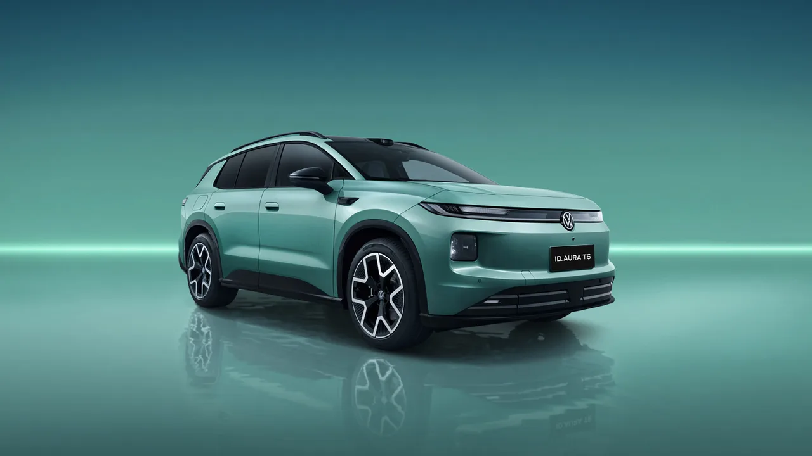
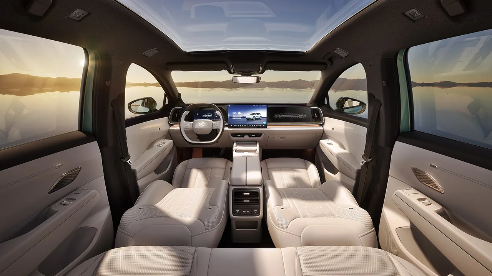
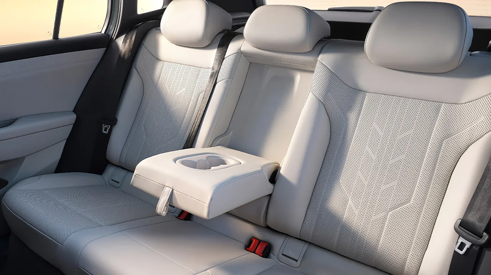

▲ FAW-폭스바겐 ID. AURA T6. 폭스바겐과 샤오펑이 함께 개발한 CEA 아키텍처를 쓴다
폭스바겐이 중국에서 밀리고 있다는 이야기는 새롭지 않습니다. 새로운 것은 대응 방식입니다.
독일에서 만든 기술을 가져오는 대신, 중국에서 개발한 것을 씁니다. FAW-폭스바겐이 사전판매를 시작한 ID. AURA T6가 그 전략의 첫 결과물입니다.
1. 2,000만 원대라는 출발선
사전판매 가격은 13만 5,900위안부터입니다. 달러로 약 2만 40달러, 원화로는 2,000만 원 초반대입니다.
5인승 중형 전기 SUV의 가격입니다. 이 숫자 하나가 중국 전기차 시장의 현재 온도를 보여줍니다.
| 트림 | 가격 | 특징 |
|---|---|---|
| 540 Pro | 13만 5,900위안 | 540km |
| 660 Pro | 14만 9,900위안 | 660km |
| 660 Max | 15만 9,900위안 | 라이다 탑재 |
| 660 Ultra | 16만 9,900위안 | 라이다 탑재 |

▲ ID. AURA T6. AURA 라인업의 첫 모델로, 중국 스마트 EV 브랜드와의 격차를 좁히는 역할을 맡았다 ⓒ CnEVPost / FAW-Volkswagen
2. 제원
차체는 전장 4,811mm, 전폭 1,879mm, 전고 1,648mm, 휠베이스 2,836mm입니다. 중형 SUV 기준으로 무난한 크기입니다.
배터리는 59.9kWh와 77.5kWh 두 가지이고, CLTC 기준 주행거리는 각각 540km와 660km입니다. 구동은 단일 모터로 최고출력 170kW(228마력)를 냅니다.
| 항목 | 수치 |
|---|---|
| 전장 | 4,811mm |
| 전폭 | 1,879mm |
| 전고 | 1,648mm |
| 휠베이스 | 2,836mm |
| 배터리 | 59.9kWh / 77.5kWh |
| 주행거리(CLTC) | 540km / 660km |
| 출력 | 170kW(228마력), 단일 모터 |

▲ 4,811mm 전장에 2,836mm 휠베이스. 중형 SUV로 무난한 비율이다 ⓒ CnEVPost / FAW-Volkswagen
3. 핵심은 CEA 아키텍처
이 차에서 진짜 주목할 부분은 하드웨어가 아니라 전자 아키텍처입니다. ID. AURA T6는 폭스바겐과 샤오펑이 공동 개발한 CEA 아키텍처를 씁니다.
전통적인 구도의 역전입니다. 독일 완성차가 중국 신생 전기차 업체의 전자 플랫폼을 가져다 쓰는 구조이기 때문입니다.
📍 왜 중국 기술을 가져왔나
중국 소비자가 전기차에서 가장 먼저 보는 것은 스마트 기능입니다. 인포테인먼트 반응성, 음성 인식, 운전자보조 성능이 구매를 가릅니다.
이 영역에서 중국 신생 업체들의 개발 속도가 전통 완성차를 앞질렀습니다. 폭스바겐은 따라잡는 대신 붙는 쪽을 택했습니다.
4. 라이다와 도심 NOA
상위 두 트림인 660 Max와 660 Ultra는 192채널 라이다를 얹고, 카리존이 개발한 운전자보조 시스템을 씁니다. 카리존은 폭스바겐과 호라이즌 로보틱스의 합작사입니다.
이 시스템은 호라이즌 로보틱스의 저니 6H 칩을 쓰며, 420 TOPS의 연산 성능을 냅니다. 고속도로는 물론 도심 NOA까지 지원합니다.
| 항목 | 내용 |
|---|---|
| 라이다 | 192채널 |
| 시스템 개발 | 카리존(폭스바겐 · 호라이즌 로보틱스 합작) |
| 칩 | 호라이즌 로보틱스 저니 6H |
| 연산 성능 | 420 TOPS |
| 기능 | 고속도로 NOA + 도심 NOA |

▲ 스마트 기능이 구매를 가르는 시장에서 실내 구성은 곧 상품성이다 ⓒ CnEVPost / FAW-Volkswagen
5. 무엇을 뜻하나
ID. AURA T6는 FAW-폭스바겐의 새로운 AURA 라인업 첫 모델입니다. 폭스바겐이 중국 스마트 EV 브랜드와의 격차를 좁히는 임무를 맡았습니다.
전략의 전환이 분명합니다. 과거에는 독일에서 개발한 플랫폼을 중국에 맞게 손보는 방식이었다면, 지금은 중국에서 개발한 것을 중국에서 판다는 쪽으로 옮겨갔습니다.

▲ 가격대를 감안하면 실내 구성에서 타협이 크지 않다는 점이 이 차의 무기다 ⓒ CnEVPost / FAW-Volkswagen
6. 국내와의 관계
이 차가 국내에 들어올 가능성은 현재로선 낮습니다. 중국 내수를 겨냥한 모델이고, 가격 구조 자체가 중국 시장 조건에 맞춰져 있습니다.
그래도 눈여겨볼 이유는 있습니다. 2,000만 원대에 660km와 라이다, 도심 NOA를 담는 차가 실제로 팔리는 시장이 있다는 사실 자체가, 앞으로 몇 년간 글로벌 전기차 가격과 사양의 기준선을 끌어내릴 압력이 되기 때문입니다.